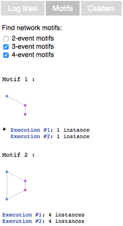
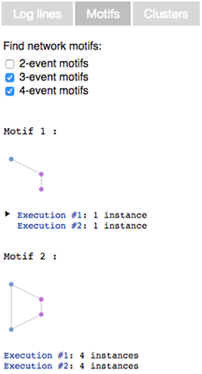

ShiViz
The ShiViz visualization engine generates interactive communication graphs from distributed system execution logs.
What am I looking at?
In the visualization:
- Time flows from top to bottom.
- The left panel shows the log and the middle panel displays a DAG of the partially ordered vector timestamps recorded in the input log.
- A vertical line with a box at the top is a process timeline. This represents a single thread of execution (e.g., a process).
- Circles on a process timeline are events that were executed by the process.
- Diagonal lines connecting two events represent the happened-before relation between the events: the higher of the two events happened before the second event.
- Dashed lines represent transitive communication edges. These only appear when a process is hidden, and two processes that are not hidden communicated indirectly through this process.
- Larger circles represent merged local events. These have a number inside of them, indicating the number of events that they represent.
- Radiating lines that fade out represent communication edges to processes that are currently hidden from view.
- Each process is associated with a unique color. Log entries in the left column have the corresponding process color. By default, the log entries are sorted in the order in which the entries appear in the graph.
How do I interact with the visualization?
The visualization supports the following actions:
-
Show process name or event info
Click on a process box or an event circle. -
Hide a process timeline
Click a process box and select "hide". This will remove the process and its timeline from view. You can hide more than one process. -
Filter by communication to process(es)
Click a process box and select "filter". The graph will be filtered to show only those processes/events that communicate with the filtered process. You can filter by more than one process. -
Expand/collapse non-communicating events
ShiViz collapses adjacent process events not incident on any communication edges into larger circles. Click on one of these nodes and select "expand" to undo this collapsing. -
Search for keywords or subgraphs
ShiViz supports keyword search across the parsed fields. Search supports logical connectives and regular expressions. You can also search for subgraphs or communication topologies of interest. You can search for a pre-defined structure like broadcast or request-response, or you can define and search for a custom structure. -
Show and hide differences between executions
When viewing two executions side-by-side, click on "show differences" to highlight the differences between two executions. Hosts that are not common to both executions are represented as rhombuses. Processes present in both executions have their events compared by theeventcapture group. Different events are drawn as rhombuses. -
Explore execution clusters
For logs with multiple executions, click on the "clusters" tab to separate executions into different groups based on a chosen metric. Cluster by the number of processes to group executions by the midpoint between the smallest and largest number of processes. Cluster by execution comparison to see an overview of how executions differ from a selected base. -
Search for network motifs
Click on the "motifs" tab to find frequently occurring communication patterns within and across executions. Search for 2, 3 or 4-event motifs that occur in at least 50% of the executions or that appear at least 5 times within a single execution.
How is this tool useful?
Here are four use-cases that ShiViz helps to support:
-
Understanding the communication graph.
Quickly scan the graph to identify the presence or absence of certain communication patterns. -
Reasoning about ordering in a concurrent or distributed setting.
Visualize concurrency and the happened-before relation to understand if two events occurred concurrently, or if one happened before the other. -
Analyzing activity at processes that matter.
Hide processes (and their log lines) for a more focused visualization. Filter by communication to a process to see only those events at other processes that were likely to have influenced the execution of a process you care about. -
Execution comparison and
differencing
Use ShiViz to process logs containing multiple executions. Compare executions pairwise, side-by-side. Use ShiViz to highlight event and host differences between two executions to understand where the executions diverge.
What is the input log format to the tool?
You can specify the log format using a regular expression on the Input page. The regular expression must contain the following three named capture groups:
event: the description of the eventhost: the name of the process, thread, or host that executed the eventclock: the vector clock associated with the event, in JSON format
You can also specify other capture groups other than event to capture fields (such as date, IP, priority) which are shown in the sidebar while hovering over an event in the visualization. These fields, unless sub-groups of the event group, will not be displayed as part of the event message.
For example, for a log entry like:
28/07/14 01:15 PM Event executedWe might have a parser RegExp like:
process2 {"process1" : time1, "process2" : time2, ..., "processN" : timeN}
(?<date>\d\d/\d\d/\d\d \d\d:\d\d (AM|PM)) (?<event>.*)\n(?<host>\w+) (?<clock>\{.*\})
The capture groups in ShiViz is not standard regexp syntax. We recommend using a plain JS regexp tester with regular capture groups to develop expressions, and name the capture groups afterwards.
How can I generate logs to use in ShiViz?
You can study the execution of any system that produces logs in a format that can be parsed using the RegExp mechanism above.
We recommend two instrumentation libraries that output ShiViz-compatible logs:


 
